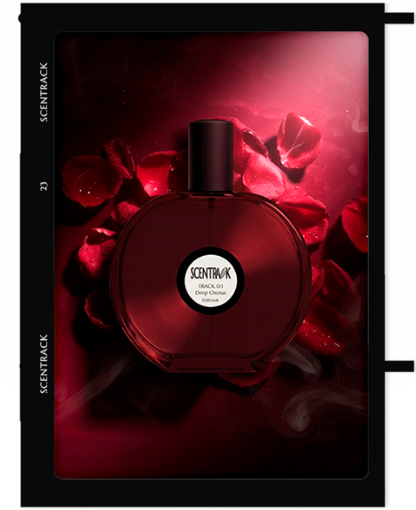
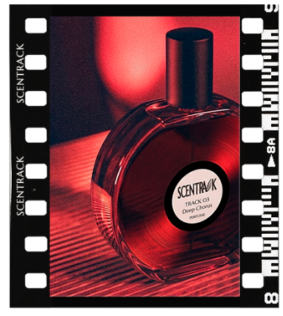
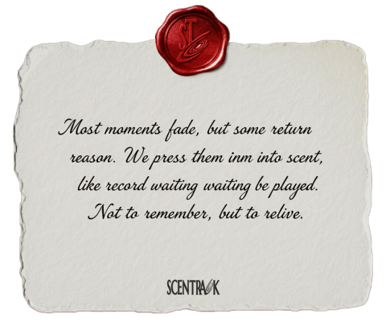
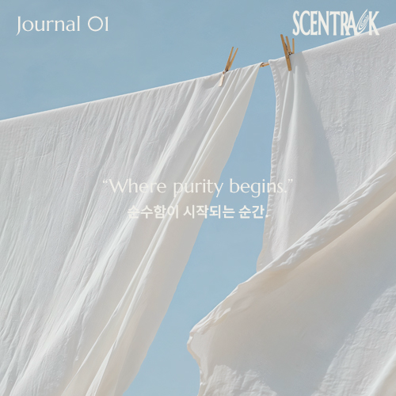
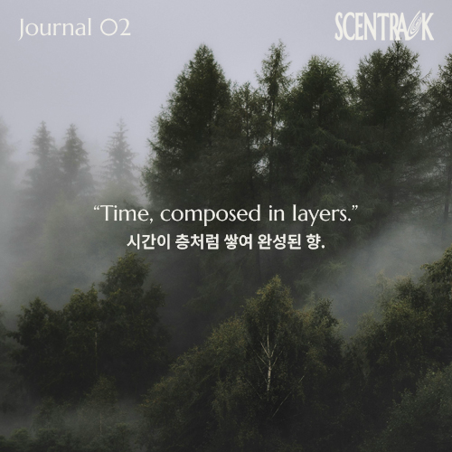
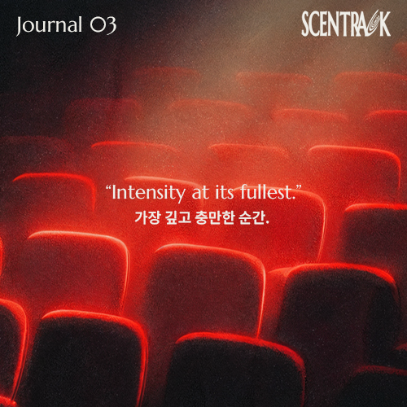
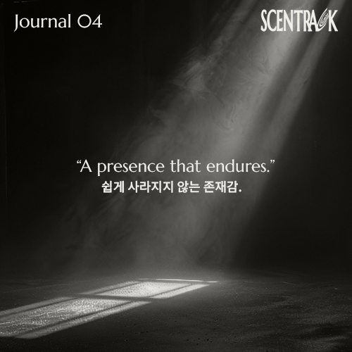

BRAND STORY
We press what fades.

Most moments fade.
시간이 지나면,
대부분의 장면은 흐려진다.
우리는 많은 것을 잊는다.
하지만 어떤 순간은
이유 없이 다시 떠오른다.
한 장의 레코드처럼,
어디선가 다시 재생되는 것처럼.
We didn’t want them to disappear.
우리는 그 순간들이
그렇게 사라지도록 두고 싶지 않았다.
그래서 우리는,
그 순간을 향으로 눌러 담았다.
보이지 않지만,
가장 선명하게 남는 방식으로.


Each scent becomes a track.
Each moment, a record.
각 향은 하나의 트랙이 되고,
각 순간은 하나의 기록이 된다.
바늘이 닿는 순간,
그 장면은 다시 시작된다.
향은 기억을 저장하지 않는다.
대신, 다시 재생한다.
Not just to remember, but to relive.
단순히 떠올리는 것이 아니라,
다시 느끼기 위해.
We press what fades.
사라지는 순간을,
다시 재생한다.
JOURNAL
Stories that play through scent.
향을 통해 흐르는 이야기

01. The Pristine Opening
"아직 아무것도 스며들지 않은 상태."
막 펼쳐진 공기, 가볍게 머무는 빛.
바람에 흔들리는 천처럼
이 순간은 투명하게 열려 있습니다.
이 향은 그 시작 직전에 머뭅니다.
02. The Lingering Texture
"시간은 조용히 스며든다."
빛이 스쳐 지나간 자리 위로 드러나지 않지만 남아 있는 결,
모든 것은 서두르지 않고 천천히 가라앉습니다.
이 향은 겹겹이 스며든 시간처럼, 조용히 이어집니다.


03. The Vivid Climax
"감정은 더 이상 숨지 않는다."
빛이 가장 강해지는 순간, 달콤함과 긴장이 겹쳐지고
공기는 점점 더 짙어집니다.
흐르지 않고 그대로 머무르는 순간.
이 향은 그 절정에 닿아 있습니다.
04. The Midnight Echo
"완전한 정적은 오지 않는다."
음악이 끝난 뒤에도 어딘가에 남아 있는 미세한 노이즈,
천천히 흩어지는 공기.
남아 있는 것들은 더 조용하고, 더 깊게 스며듭니다.
이 향은 마지막까지 남습니다.
